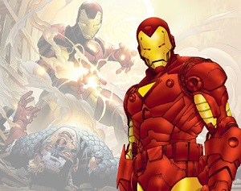

Iron Man¶
| Alter Ego | Anthony Edward “Tony” Stark |
| Abilities |
|
| Arch-Nemisis | Iron Monger |
| Popular Enemies |
|
Backstory:
Anthony “Tony” Stark was born to Howard Anthony Stark and Maria Collins Stark, the owners of Stark Industries. As a boy, Stark was fascinated with machines and the thought of building and controlling them. At the age of 15 Tony began his college education at MIT and graduated at 19 with two master’s degrees. He went to work for his parent’s company, but seemed to be more interested in the reckless playboy lifestyle. When he was 21, his parents died in a car acccident, which left him to run Stark Industries. Still lacking knowledge in the business world, he called upon his secretary Virginia “Pepper” Potts to take much of the workload, so that he could focus on other things.
Later in life, Tony was attending a field test of his military hardware when his party was attacked by a gang of terrorists led by the Sin-Cong revolutionary Wong Chu. During the battle, a land mine went off and lodged a piece of shrapnel near Tony’s heart. Stark was captured and taken back to the revolutionary’s camp and shared a cell with Professor Ho Yinsen, who was a world-famous physicist. Wong Chu demanded that the two begin developing advanced weaponry for his forces, but knowing that he wouldn’t live long with the shrapnel growing ever closer to his heart, Tony suggested using their talents to create one of the battle suits that he had been working on. The suit would also contain a magnetic field generator to prevent the shrapnel from entering his heart. While the battery for the armor was being charged, some of Wong Chu’s men tried to break in and see what was going on. Yinsen went to create a distraction, but was killed by Wong Chu’s men. When the battery was finished charging, Tony went into battle as the new Iron Man and tore the camp apart. He later returned back to the US with the help of a Marine named James “Rhodey” Rhodes.
In the beginning, Stark found the chest plate to be a complete nuisance, as it had to be worn constantly and required frequent charging. He kept this armor a secret from everyone, inlcuding his fiancee, Joanna Nivena. He soon became suicidal and began drinking heavily, but was supported by Joanna, who he had shared his identity with. Joanna encouraged him to use the armor to become a super hero, which spurned him to push to keep improving the suit. He later became one of the integral characters in the creation of the Avengers, both as a sponsor and as a founding member.